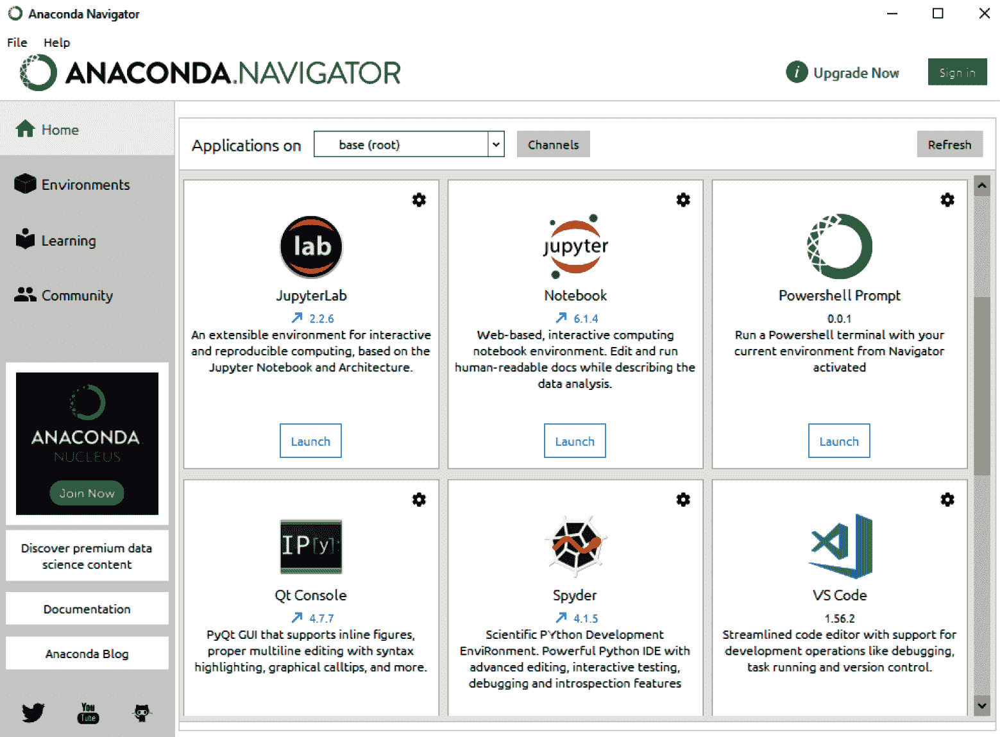

当走进一家咖啡店时，你几乎会立即注意到三种类型的人:与他人交往的人、从事项目的人和编码的人。程序员很容易被他们电脑屏幕上的黑色背景和白色字母认出来——这就是所谓的命令行。对许多人来说，命令行可能看起来很激烈和吓人，但对其他人来说，它是一种生活方式。
进行任何类型的数据科学项目的最重要的部分之一是通过终端命令行有效地导航目录和执行命令的能力。命令行允许用户以高效简洁的方式查找文件、安装库、定位包、访问数据和执行命令。本章绝不是对命令行所有功能的全面概述，但它涵盖了每个数据科学家都应该知道的基本命令的一般列表。
在本章中，我们将讨论以下具体主题:
本章我们将使用Applications文件夹( macOS ，或者命令提示符，可以在开始菜单中找到(WindowsT23】PC)。尽管这两者在功能上是等同的，但是某些命令背后的语法会有所不同。如果你使用的是PC，建议你下载Git for Windows(https://git-scm.com/download/win)，这将允许你使用 Bash 命令行。当我们开始在命令行中编辑文件时，我们将需要一个名为 Vim 的编辑器。大多数Mac用户会在他们的系统中预装Vim。鼓励个人电脑用户从他们的网站(https://www.vim.org/download.php)下载Vim。
此外，我们将使用 Anaconda 发行版探索Python。我们很快会把它下载到你的系统上。Mac和PC用户安装Anaconda的过程几乎是一样的，Python代码的执行也几乎是一样的。
在这本书里，你看到的代码也可以在GitHub上找到。我们可以将GitHub视为一个代码可以生存的空间，允许我们维护版本，进行编辑，并与其他人共享我们的工作。在您阅读本章时，我们鼓励您参考相关的GitHub资源库，该资源库可以在https://GitHub . com/packt publishing/Machine-Learning-in-Biotechnology-and-Life-Sciences找到。
命令行适用于 Mac 、 PC 和 Linux 。虽然下面的例子是在Mac上执行的，但非常相似的功能也适用于PC，只是语法略有不同。
您可以通过打开命令行(称为@符号)来开始这个过程。让我们看看一些基本的命令。
为了识别你当前(工作)目录的路径，你可以使用pwd命令:
$ pwd
这将返回您当前所在的确切目录。在我的系统中，返回的路径如下:
Users/alkhalifas
为了识别这个特定目录中的内容，您可以使用ls命令，它将返回一个目录和文件列表:
$ ls
您可以在命令行中使用mkdir命令创建一个新目录，后跟您想要创建的目录的名称。例如，您可以使用以下命令创建machine-learning-practice目录:
$ mkdir machine-learning-biotech
如果使用ls命令再次列出该目录中的内容，新目录将出现在该列表中。您可以使用cd(即更改目录)命令导航到该目录:
$ cd machine-learning-practice
您可以再次使用pwd命令来检查您的新路径:
$ pwd Users/alkhalifas/machine-learning-biotech
为了返回到上一个目录，可以使用cd命令，后跟一个空格和两个句点( ..):
$ cd ..
重要说明
值得一提的是，根据您使用的命令行，目录名可以区分大小写。例如，输入Downloads而不是downloads可能会被解释为不同的位置，因此这可能会返回错误。保持文件名和目录名的一致性是成功使用命令行的关键。
现在你已经学习了一些基础知识，让我们继续使用命令行创建我们的第一个Python应用程序。我们可以使用vim命令创建并编辑一个新文件，后跟您希望创建和编辑的文件名:
$ vim myscript.py
这将在命令行的Vim编辑器中打开一个空文件，您可以在其中编写或粘贴代码。默认情况下，您将从视图模式开始。您可以通过按键盘上的 I 键切换到编辑模式。您会注意到Vim窗口底部的状态已经变成了 - - INSERT - - ，这意味着您现在可以向这个fil e:
图2.1–Vim窗口
将下面几行Python代码键入(或复制粘贴)到文件中，然后点击 Esc 键。您会注意到状态不再是:wq并按下进入。 w 键将写入文件，而 q 键将退出编辑器。有关其他Vim命令的更多详细信息，请访问Vim网站https://www.vim.org/:
# myscript.py
import datetime
now = datetime.datetime.now()
print("Hello Biotech World")
print ("The current date and time is:")
print (now.strftime("%Y-%m-%d %H:%M:%S"))
至此，您已经编写了第一个Python脚本。我们可以使用您之前安装的Python解释器继续执行这个脚本。在我们这样做之前，让我们讨论一下这个脚本将会做什么。从第一行的开始，我们将导入一个名为datetime的库，这将允许我们确定系统的当前日期和时间。接下来，我们将datetime对象赋给一个我们称之为now的变量。我们将在下一节中讨论对象和变量，但是现在，把它们看作可以用日期或数字之类的值填充的变量。最后，我们将打印一个短语Hello Biotech World!，后面跟着一个当前时间的声明。
让我们试一试:
$ python3 myscript.py
执行此文件后，屏幕上将出现以下结果:
Hello Biotech World! The current date and time is: 2021-05-23 18:40:21
在这个例子中，我们使用了一个名为datetime的库，它是在您安装Anaconda发行版时默认安装的。还有许多其他的也安装了，还有许多没有安装。随着我们在这些项目中的进展，我们将使用许多其他的库，我们可以使用pip来安装这些库。
前面的例子没有任何错误。然而，当涉及到编程时，这种情况很少出现。有时，缺少句点或未关闭的括号会导致错误。在其他情况下，程序会无限期运行——可能在你不知情的情况下在后台运行。关闭终端命令行通常会停止正在运行的应用程序。但是，有时关闭命令行窗口并不是一个选项。要识别在后台运行的进程，可以使用ps(即process)命令:
$ ps -ef
这将显示所有正在运行的进程的列表。第一列UID是用户ID，后面是PID(进程ID)列。再往右几列，您可以看到当前活动和运行的文件(如果有)的具体名称。您可以使用grep命令缩小列表，找到所有与Python相关的内容:
$ ps -ef | grep python
如果Python脚本(例如，someScript.py)在后台持续运行，您可以使用grep命令轻松确定进程ID，这意味着您可以随后使用pkill命令终止该进程:
$ pkill -9 -f someScript.py
这将终止脚本，并为其他任务释放电脑内存。
管理 Python库的最佳资源之一是sklearn，我们可以在终端命令行中直接使用pip install命令来安装它:
$ pip install sklearn
包管理器会打印一些反馈信息，提醒你安装的状态。在某些情况下，安装会成功，而在其他情况下，可能不会成功。您在此收到的反馈将有助于确定需要采取的后续步骤(如果有)。
在某些情况下，一个库需要另一个库才能运行——这就是所谓的,pip会自动为你处理依赖关系，但情况并不总是这样。
要识别一个库的依赖关系，您可以使用pip show命令:
$ pip show sklearn
然后，命令行将打印名称、版本、URL和与给定库相关的许多其他属性。在某些情况下，显示的版本可能已经过时，或者根本不是您需要的版本。您可以再次使用pip install命令将库更新到一个更新的版本，或者您可以通过在库名称后指定来选择一个特定的版本:
$ pip install sklearn==0.15.2
随着您安装的软件包数量开始增加，记住名称和相关版本将变得越来越困难。为了生成给定环境中的包列表，您可以使用pip freeze命令:
$ pip freeze > requirements.txt
这个命令将冻结一系列库及其相关版本，然后将它们写入一个名为requirements.txt的文件。当将代码从一台计算机迁移到另一台计算机时，这种做法在团队中很常见。
通常，代码会失败，命令会出错，并且会出现无法立即找到解决方案的问题。不要让这些情况使你气馁。当您开始探索命令行、Python和大多数其他基于代码的工作时，您可能会遇到无法解决的错误和问题。但是，很可能别人已经解决了你的问题。可用于搜索和诊断代码相关问题的最佳资源之一是Stack Overflow——一个主要的协作和知识共享平台，供个人和公司提出问题并找到与所有类型的代码相关的问题的解决方案。强烈建议您利用这一美好的资源。
现在我们已经很好地了解了命令行及其无穷的功能，让我们开始更详细地探索Python。
当今世界上有许多不同的计算机语言。 Python ， R ， SQL ， Java ， JavaScript ， C++ ， C ， C# 只是几个例子。虽然这些语言的语法和应用各不相同，但它们可以分为两大类:低级和高级语言。低级语言——如C和c++——是在机器级别运行的计算机语言。他们关心的是非常具体的任务，比如将比特从一个位置移动到另一个位置。另一方面，高级语言——比如R和Python——关心更抽象的过程，比如对列表中的数字求平方。他们完全忽略了机器层面发生的事情。
在我们更详细地讨论Python之前，我们先来谈谈编译程序的想法。大多数程序——比如用C++和Java编写的程序——需要所谓的T42编译器。把编译器想象成一个软件，它在程序启动或执行之前把人类可读的代码转换成机器可读的代码。虽然大多数语言都需要编译器，但Python等语言不需要编译器。Python需要所谓的解释器，它在结构上与编译器本质上相似，但它会立即执行命令，而不是将它们翻译成机器可读的代码。考虑到这一点，我们将Python定义为一种高级、通用、解释型编程语言。Python通常用于统计工作、机器学习应用，甚至游戏和网站开发。因为Python是一种解释型语言，所以它既可以在IDE中使用，也可以直接在终端命令行中使用:
$ python
接下来我们就来说说IDEs。
Python代码可以用几种不同的方式准备。例如，我们可以使用Vim文本编辑器通过终端命令行来准备它，如前一节所演示的。虽然这种方法非常有效，但是在构建文件、组织目录和执行代码时，您通常会遇到冗余。或者，大多数数据科学家默认使用更图形化的编辑器，称为集成开发环境(ide)。有很多ide是免费的，可以下载，比如 Spyder 、 PyCharm 、 Visual Studio 或者 Jupyter Lab 。
每个IDE 都有各自的优点和缺点，而那些高度依赖于用户的用例和工作流。大多数新数据科学家在入门时一般会默认 Jupyter笔记本和/或 Jupyter实验室。出于本书的目的，所有代码都将使用Jupyter 笔记本来编写和共享。假设在前一章中正确遵循了Anaconda 的安装说明，Jupyter Notebook应该已经安装在您的本地机器上了。您可以通过打开 Anaconda Navigator 并选择 Jupyter Notebook 来启动应用程序:

图2.2–Anaconda导航窗口
或者，您也可以通过键入以下命令，使用终端命令行启动Jupyter笔记本应用程序:
$ jupyter notebook
按下键后，我们之前看到的那个Jupyter笔记本应用程序应该会出现在你的屏幕上。这只是一个更快的打开Jupyter笔记本的方法。
Python能够处理许多不同类型的数据。这些一般可以分为两个主要类别:原语和集合，如下图所示:
图2.3–显示Python数据类型的图表
第一个数据类型类别是原始值。顾名思义，这些数据类型是Python中最基本的构建块。以下是其中的几个例子:
图2.4-原始数据类型表
第二个数据类型类别是集合。集合由一个或多个原始值组合而成。每种类型的集合都有与之相关的特定属性，在某些情况下会产生不同的优点和缺点。以下是其中的几个例子:
图2.5-显示不同种类的数据类型集合的表格
作为科学家，我们自然倾向于尽可能好地组织信息。我们之前根据数据类型的原始性和集体性对它们进行了分类。然而，我们也可以根据一个叫做可变性的概念来对数据类型进行分类。可变性也可以被认为是删除能力。变量，比如那些表示列表的变量，包含了该类型的一个实例。当对象被创建或实例化时，它被分配一个唯一的ID。通常情况下，该对象的类型在运行时定义后不能更改，但是，如果认为可变，则可以更改。像整数、浮点数和布尔值这样的对象被认为是不可变的因此在被创建后不能被改变。另一方面，列表、字典和集合等对象是可变对象，可以被改变。因此，它们被认为是可变的，正如您从图2.6 中看到的:
图2.6–根据可变性划分的Python数据类型
现在我们已经了解了一些基础知识，让我们来探索Python语言中一些更令人兴奋的领域。
Python是一种广泛的语言，任何试图用不到10页的篇幅来总结它的能力的尝试都会受到限制。虽然这本书并不打算作为Python的全面指南，但我们将讨论每个数据科学家都应该知道的一些必须知道的命令和功能。我们将在接下来的教程中看到这些命令中的绝大多数。
Python中的核心概念之一是变量的概念。+)或减法(-)可以和变量组合起来创建5会赋给x变量，然后10的一个值会赋给y变量。现在表示数值的两个变量(x和y)被认为是z，可以被创建来表示x和y的和:
$ python >>> x = 5 >>> y = 10 >>> z = x + y >>> print(z) 15
变量可以采用多种数据类型。除了上述代码中显示的整数值之外，变量还可以被赋值为字符串、浮点甚至布尔值:
>>> x = "biotechnology" >>> x = 3.14159 >>> x = True
变量的具体数据类型可以使用type()函数确定:
>>> x = 55 >>> type(x) int
数据类型不需要在Python中显式声明(不像C++或Java等其他语言)。其实Python也允许变量被 cast 成其他类型。例如，我们可以将整数转换为字符串:
>>> x = 55 >>> x = str(x) >>> type(x) str
我们可以从返回的内容中看到，数据现在是字符串类型！
安装完一个库后，您可以使用import函数将该库导入到您的Python脚本或 Jupyter笔记本中。您可以通过以下方式整体导入库:
>>> import statistics
或者，我们可以从库中显式导入所有类:
>>> from statistics import *
导入任何库的最佳方式是只导入您计划使用的类。我们可以想到statistics图书馆:
>>> from statistics import mean
随着您进一步涉足数据科学领域，安装和导入库将成为您的第二天性。下表显示了任何新数据科学家都应该知道的一些最常见和最有用的库。虽然不是所有这些都将在本书的范围内涵盖，但了解它们是有用的。
图2.7-显示一些最常见的Python库的表格
上表中包含的库是您在开始数据科学之旅时会遇到的一些最常见的库。在下一节中，我们将重点关注运行一些计算的math库。
在Python语言中，我们可以创建变量并赋予它们特定的值，正如我们之前观察到的。接下来，我们可以使用这些变量中的值来形成表达式并进行数学计算。例如，阿伦尼乌斯方程，通常用于预测分子稳定性和计算反应速率的温度依赖性。这个等式通常在R & D中用于两个主要目的:
该等式可以表示如下:
在这种情况下， k 是速率常数， A 是频率因子， EA 是活化能， R 是理想气体常数， T 是开尔文 ( K 中的温度。我们可以用这个方程来计算温度的变化如何影响速率常数。让我们假设当前需要预测如果温度从293 K变到303 K会发生什么。首先，我们需要定义一些变量:
>>> from math import exp >>> EA = 50000 >>> R = 8.31 >>> T1 = 293 >>> exp(-EA / (R*T1)) 1.2067e-09
>>> T2 = 303 >>> exp(-EA / (R*T2)) 2.3766e-09
总之，这表明一个简单的温度变化几乎使该派别翻倍！
列表和字典是Python中最常见和最基本的数据类型中的两种。列表是简单的元素有序集合(类似于数组),可以保存相同类型或不同类型的元素:
>>> homogenousList = ["toluene", "methanol", "ethanol"] >>> heterogenousList = ["dichloromethane", 3.14, True]
任何给定列表的长度都可以使用len()函数捕获:
>>> len(heterogenousList) 3
可以使用列表元素的索引位置来检索它们。请记住，Python中的所有索引都从0开始，因此，这个列表的第一个元素应该在0索引处:
>>> heterogenousList[0] dichloromethane >>> heterogenousList[1] 3.14
与它们的原始对应物不同，列表是可变的，因为它们可以在创建后被修改。我们可以使用append()函数向列表中添加另一个元素:
>>> len(homogenousList)
3
>>> homogenousList.append("acetonitrile")
>>> len(homogenousList)
4
另一方面，字典经常被用来关联关键字和T21值。给定一个字典，您可以指定一个键的名称及其对应的值。例如，包含化学品名称及其有效期的化学品清单在标准Python列表中就不太适用。在这个地层中，化学名称和它们的日期很难联系在一起。
然而，字典是建立这种联系的最佳方式:
>>> singleChemical = {"name" : "acetonitrile",
"exp_date" : "5/26/2021"}
这本字典现在代表了一种化学物质的元素，也就是说，它有一个对应名称的关键字，还有一个对应有效期的关键字。您可以通过指定键来检索字典中的特定值:
>>> singleChemical["name"] acetonitrile
为了构建化学品的完整库存，您将需要创建多个字典，每个字典对应一种化学品，并将它们全部添加到一个列表中。这种格式被称为 JSON ，我们将在本章后面更详细地探讨它。
Python 中的数组在某种意义上类似于列表，它们可以包含不同类型的元素，它们可以有多个副本，并且它们可以随着时间的推移而改变和变异。使用简单的函数可以很容易地对数组进行扩展、追加、清除、复制、计数、索引、反转或排序。以下面这个为例:
numpy : import numpy as np newArray = np.array([1,2,3,4,5,6,7,8,9,10])创建一个数组
append()函数将另一个元素添加到列表的末尾:>>> newArray= np.append(newArray,25) >>> newArray [1,2,3,4,5,6,7,8,9,10,25]
len()函数可以确定数组的长度:>>> len(newArray) 11
>>> firstHalf = newArray[:5] >>> firstHalf [1,2,3,4,5]
现在我们已经掌握了一些关于Python的基础知识，让我们深入到更复杂的话题函数。
Python 中的函数是一种组织代码和隔离进程的方式，允许您定义显式输入和显式输出。以一个平方数字的函数为例:
def squaring_function(x): # A function that squares the input return x * x
函数是第一类,因为它们可以被分配给变量或随后传递给其他函数:
>>> num = squaring_function(5) >>> print(num) 25
根据它们的用途，函数可以有多个输入和输出。人们普遍认为一个功能应该服务于一个特定的目的，仅此而已。
在许多情况下，任务必须以重复或迭代的方式进行。在前面的例子中，一个值被平方，然而，如果有10个值需要被平方呢？你可以手动反复运行这个函数，或者用for循环和while循环迭代它。当迭代次数已知时，通常使用for循环。另一方面，当根据给定条件需要中断循环时，通常使用while循环。让我们来看一个for循环的例子:
input_list = [1, 2, 3, 4, 5, 6, 7, 8, 9, 10] output_list = [] for val in input_list: squared_val = squaring_function(val) output_list.append(squared_val) print(val, " squared is: ", squared_val)
首先，定义一个值列表。然后创建一个空列表——平方值将被写入其中。然后，我们遍历列表，计算值的平方，将其追加(添加)到新列表中，然后打印值。虽然for循环对于迭代来说很棒，但是在某些情况下，当处理较大的数据集时，它们会非常慢。
然而，while循环也可以用于各种类型的迭代，特别是当满足一个条件时迭代停止。让我们来看一个while循环的例子:
current_val = 0 while current_val < 10: print(current_val) current_val += 1
现在我们已经对循环以及如何使用它们有了更深的理解，让我们探索一种更高级的形式的迭代，称为列表理解。
像for循环一样，列表理解允许使用强大的单行代码进行流程迭代。我们可以用这一行复制前面的平方值的例子:
>>> my_squared_list = [squaring_function(val) for val in input_list]
你应该使用列表理解的三个主要原因是:
for环路同行。pandas库可以说是Python数据科学领域中最常见的对象。数据帧类似于结构化的表格(想象一个DataFrame对象可以被构造如下:
>>> import pandas as pd >>> df = pd.DataFrame([[1,2,3],[4,5,6],[7,8,9]],columns = ['col1','col2', 'col3']) >>> print(df)
这将产生以下输出:
图2.8-显示DataFrame对象结果的表格
一个DataFrame对象中的几乎每个参数都可以被改变，以适应其中的数据。例如，可以用完整的单词重新标记这些列:
>>> df.columns = ["ColumnA", "ColumnB", "ColumnC"]
可以创建表示数学函数输出的新列。例如，可以准备表示ColumnC的平方值的列:
>>> df["ColumnC_Squared"] = df["ColumnC"] ** 2 >>> print(df)
其输出如下所示:
图2.9-显示DataFrame对象结果的表格
或者，数据帧可以使用本地机器上已有的 CSV文件准备。这可以通过使用read_csv()功能来完成:
>>> import pandas as pd
>>> df = pd.read_csv('dataset_lipophilicity_sd.csv')
可以选择一组特定的列，而不是导入整个数据集:
>>> df = df[["ID", "TPSA", "MolWt", "LogP"]] >>> df.head()
其输出如下所示:
图2.10-显示DataFrame对象结果的表格
或者，也可以使用tail()函数查看最后几行数据:
>>> df.tail()
数据帧是Python中最常见的数据处理和表示形式，因为它们类似于大多数人熟悉的标准2D表。处理大量数据的一个更有效的选择是使用PySpark库。
现在我们已经能够在我们的机器上本地管理和处理数据，让我们看看如何使用 API请求从外部来源检索数据。
在某些情况下，数据在本地计算机上不可用，您将需要从远程位置检索数据。最常见的发送和接收数据的方式之一是以应用编程接口 ( API )的形式。API背后的主要思想是使用HTTP 请求获取数据，通常以 JSON 格式传递。让我们看一个例子:
import requests
r = requests.get('https://raw.githubusercontent.com/alkhalifas/node-api-books/master/services/books.json')
data = r.json()
可以把JSON想象成一个字典列表，其中每个字典都是一个元素。我们可以根据索引位置选择列表中的特定元素。在Python中，我们从0开始计数，因此，我们的字典列表中的第一项将具有索引位置0:
>>> data[0]
这为我们提供了以下信息:
图2.11–从HTTP请求中获得的结果示例
>>> data[0]["type"] HARD_COVER
以类似于 CSV文件的方式，JSON文件也可以使用read_json()功能导入到数据帧中。
不像我们已经导入到Python中的许多结构化形式的数据，例如CSV和JSON文件，您经常会遇到非结构化形式的数据，例如文本文件或pdf。对于大多数使用tika的应用程序，这是开源社区中最流行的应用程序之一。我们可以从使用pip安装库开始:
alkhalifas@titanium ~ % pip install tika
然后，我们可以继续阅读感兴趣的特定PDF文件:
from tika import parser
raw = parser.from_file("./datasets/COVID19-CDC.pdf")
print(raw['content'])
raw['content']中的数据将是tika库解析的PDF文件的文本。这些数据现在可以在后续的NLP应用程序中使用和预处理了。
到目前为止，我们处理的绝大多数文档都是保存在本地计算机上的文件，例如pdf、CSV和JSON文件。那么，我们如何保存一个Python对象呢？如果你有一个想要保存的项目的重要列表——也许是我们前面例子中的化学物质——你将需要一种方法把这些文件保存在本地以备后用。为此，大多数数据科学家使用pickle。pickle库允许您以.pkl文件的形式保存和存储Python对象供以后使用。这些文件稍后可以被导入回Python并用于新的任务。这是一个在Python中被称为序列化和反序列化对象的过程。让我们看一个使用.pkl文件的例子。我们首先导入pickle库，然后创建一个项目列表:
>>> import pickle >>> cell_lines = ["COS", "MDCK", "L6", "HeLa", "H1", "H9"]
为了将列表保存为.pkl文件，我们需要指定文件的保存位置。注意，我们将使用wb模式(即写二进制码模式)。然后我们将使用dump()功能保存内容:
>>> pickledList = open('./tmp/cellLineList.pkl', 'wb')
>>> pickle.dump(cell_lines, pickledList)
无论文件是保存在本地还是与同事共享，都可以通过类似的方式使用load()命令将其加载回Python:
>>> pickledList = open('./tmp/cellLineList.pkl', 'rb')
>>> cell_lines_loaded = pickle.load(pickledList)
>>> print(cell_lines_loaded)
["COS", "MDCK", "L6", "HeLa", "H1", "H9"]
注意，在前面的例子中，我们根据任务在两个参数之间切换——wb(写二进制)和rb(读二进制)。这是可以选择加载和保存文件的两种模式。还有许多其他选项可以使用。这里应该注意的主要区别是使用了二进制格式。在Windows上，以二进制模式打开文件将处理文本文件中的行尾字符，这些字符通常出现在ASCII文件中。下表概述了一些最常见的模式:
图2.12–显示最常见读/写模式的表格
现在我们已经对API和我们可以对数据执行的操作有了基本的了解，让我们看看面向对象编程 ( OOP )的使用，因为它与Python有关。
类似于许多其他语言——如C++、Java和c#——OOP的概念也可以用在Python中。在OOP中，主要目的是使用类来组织和封装数据对象及其相关函数。
让我们在化学品库存管理的背景下探索OOP的一个例子。大多数现代生物技术公司都有广泛的库存系统来监控内部化学品的库存。库存系统允许公司确保供应不会耗尽，并充分监控到期日期，以及许多其他任务。现在，我们将使用我们当前的Python知识以及OOP的概念来构建一个库存管理系统:
import datetime from dateutil import parser
class Chemical:
class Chemical: def __init__(self, name, symbol, exp_date, count): self.name = name self.symbol = symbol self.exp_date = exp_date self.count = count
__init__函数的目的是初始化或创建这个对象，我们使用self来引用一个类的特定实例。例如，如果我们创建了两个化学物体，self.name可能是一个物体的acetonitrile和另一个物体的methanol。
self作为参数，将函数与感兴趣的特定实例联系起来。在下面的例子中，我们将创建一个isExpired()函数，该函数将读取化学品的有效期，如果过期，将返回一个True值。我们首先确定今天的日期，然后使用self.exp_date参数检索对象的日期。然后我们返回一个布尔值，它是两个日期的比较结果:def isExpired(self): todays_date = datetime.datetime.today() exp_date = parser.parse(self.exp_date) return todays_date > exp_date
Chemical类>>> chem1 = Chemical(name="Toluene", symbol="TOL", exp_date="2019-05-20", count = 5)创建一个新对象来测试这一点
chem1的化学物体。我们可以通过指定字段名称来检索chem1的字段或属性:namefield was not followed by parentheses in the way we have previously seen. This is becausenameis only a field that is associated with the class and not a function.
self argument.>>> chem2 = Chemical(name="Toluene", symbol="TOL", exp_date="2021-11-25", count = 4) >>> chem3 = Chemical(name="Dichloromethane", symbol="DCM", exp_date="2020-05-13", count = 12) >>> chem4 = Chemical(name="Methanol", symbol="MET", exp_date="2021-01-13", count = 5)
当后面跟有字段或函数时，这些对象中的每一个都将返回它们各自的值。
def summarizer(self): print("The chemical", self.name, "with the symbol (",self.symbol,") has the expiration date", self.exp_date)summarizer()函数，以便检索其状态的人类可读摘要:>>> print(chem1.summarizer()) The chemical Toluene with the symbol ( TOL ) has the expiration date 2019-05-20
def setCount(self, value): self.count = value
value作为参数，将该实例的计数(由self.count表示)设置为相应的值。我们可以用我们的一个对象来测试这个:>>> chem1 = Chemical(name="Toluene", symbol="TOL", exp_date="2019-05-20", count = 5) >>> chem1.count 5 >>> chem1.setCount(25) >>> chem1.count 25
OOP还有许多其他的用途、应用和模式，它们超越了我们刚刚看到的例子。例如，库存系统不仅需要维护他们的库存，而且还需要管理每件商品的有效期，记录销售细节，并拥有编译和报告这些指标的方法和功能。如果你对Python内部的类开发感兴趣，请访问官方的 Python文档来了解更多(https://docs.python.org/3/tutorial/classes.html)。
在上一个教程中，我们看到了Python如何用于计算属性、组织数据、解析文件等等的各种例子。除了到目前为止我们已经合作过的库之外，在生物技术和生命科学领域，我们还需要特别关注另外两个库: Rdkit 和 BioPython 。在接下来的几节中，我们将看看这些包中许多可用功能的几个例子。考虑到这一点，让我们开始吧！
数据科学家在处理与小分子相关的数据时最常用的软件包之一是rdkit软件包，它包括许多不同的工具和功能，以至于我们需要一本完整的第二本书才能全部涵盖。下面突出显示了该软件包最常见的五种应用，如图图2.13 所示:
图2.13–rd kit包中的一些主要功能
让我们继续举例说明其中的一些功能，以便向我们介绍rdkit包。
类似于我们已经看到的一些包，rdkit是按类组织的。现在让我们利用Chem类，通过几个简单的步骤加载一个SMILES表示。
我们将从导入Chem类开始:
from rdkit import Chem
将2D分子结构从一个Python脚本转移到另一个脚本的最简单和最常见的方法之一是使用SMILES表示。例如，我们可以描述如下所示的SMILES表示:
SMILES = "[Br-].[Br-].CCCCCCCCCCC[N+]1=CC=C(CCCC2=CC=[N+](CCCCCCCCCCC)C=C2)C=C1"
我们可以使用Chem类中的MolFromSmiles函数将我们的SMILES表示加载到rdkit中:
molecule = Chem.MolFromSmiles(SMILES) molecule
在打印我们上面分配的分子变量时，将返回一个分子的图形，如图2.14 所示:
图2.14-使用rdkit的QAC的2D表示
请注意，我们不需要任何额外的包来打印该图，因为rdkit非常全面，拥有运行这些可视化所需的一切。在下一节中，我们将看到另一个关于相似性计算的例子rdkit。
现在加载结构，有许多不同的应用和计算可以做。最常用的方法之一是在分子中寻找亚结构。我们可以通过使用rdkit中的MolFromSmarts功能来实现这一点:
tail_pattern = Chem.MolFromSmarts('CCCCCCCCCCC')
patter
执行此操作后，我们得到下图，显示了感兴趣的子结构:
图2.15–感兴趣的2D下部结构
感兴趣的主要分子和模式现在都已加载，我们可以使用HasSubstructMatch函数来确定子结构是否存在:
molecule.HasSubstructMatch(tail_pattern)
在执行这段代码时，将返回True的值，表明该结构确实存在。另一方面，如果运行另一个子结构，如苯酚，该值将返回False，因为该子结构不存在于主分子中。
此外，可以使用rdkit中的DataStructs类运行相似性计算。我们可以通过导入类，并输入两个感兴趣的分子:
from rdkit import DataStructs
from rdkit.Chem import Draw
mol_sim = [Chem.MolFromSmiles('[Br-].[Br-].CCCCCC[N+]1=CC=C(CCCC2=CC=[N+](CCCCCC)C=C2)C=C1'), Chem.MolFromSmiles('[Br-].[Br-].CCCCCCCCCCC[N+]1=CC=C(CCCC2=CC=[N+](CCCCCCCCCCC)C=C2)C=C1')]
如果我们使用之前看到的MolFromSmiles方法直观地比较这两个分子，我们可以看到这两个结构之间存在微小的差异，即其中一个分子的疏水尾部有双键。
接下来，我们可以使用RDKFingerprint函数来计算指纹:
fps = [Chem.RDKFingerprint(x) for x in mol_sim]
最后，我们可以使用CosineSimilarity度量来计算这两种结构的差异:
DataStructs.FingerprintSimilarity(fps[0],fps[1], metric=DataStructs.CosineSimilarity)
这一计算将产生大约99.14%的值，表明除了微小的差异之外，这些结构大部分是相同的。
Python是一种强大的语言，不管你的专业领域是什么，它都会很好地为你服务。在本章中，我们讨论了使用命令行时一些最重要的概念，例如创建目录、安装包以及创建和编辑Python脚本。我们还非常广泛地讨论了Python编程语言。我们回顾了一些最常用的ide、通用数据类型和计算。我们还回顾了一些更复杂的数据类型，比如列表、数据帧和JSON文件。我们还学习了API和HTTP请求的基础知识，并介绍了与Python类相关的OOP。我们在本章中探讨的所有示例都与数据科学领域中常见的应用程序相关，因此对它们有一个深刻的理解将非常有益。
尽管本章旨在向您介绍数据科学中一些最重要的概念(如变量、列表、JSON文件和字典)，但我们无法涵盖所有这些概念。还有许多其他的主题，比如元组、集合、计数器、排序、正则表达式以及我们没有讨论的OOP的许多方面。Python的文档——无论是印刷的还是在线的——都非常广泛，而且大部分都是免费的。我强烈建议你利用这些资源，尽可能多地从中学习。
在本章中，我们讨论了处理少量数据的多种方法，涉及到数据切片和运行基本计算。在企业层面，数据通常数量非常大，因此，我们需要合适的工具来处理它。那个工具就是结构化查询语言 ( SQL ，我们将在下一章熟悉这个。